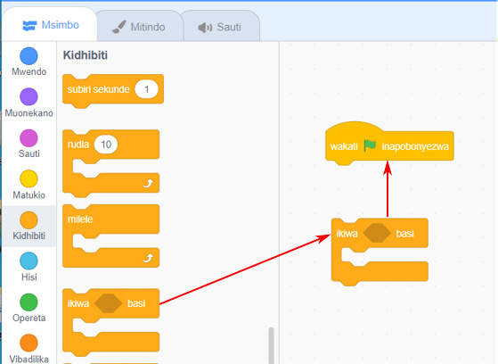
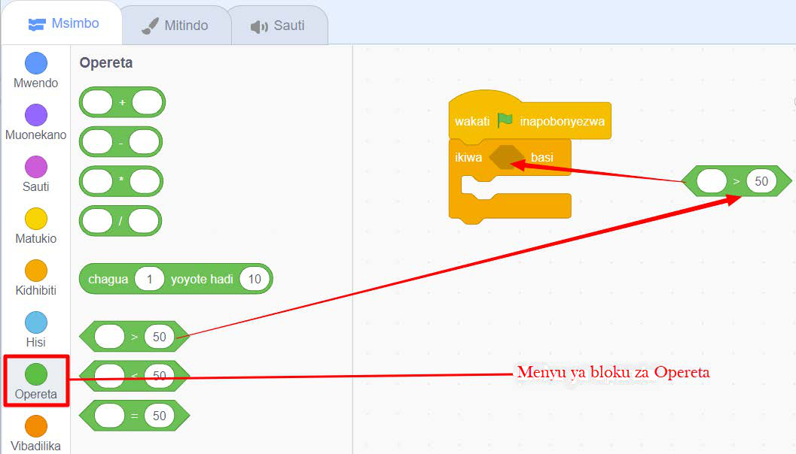

Maelezo ya picha: Bloku ya ikiwa basi imeunganishwa katika eneo la kuandikia ili programu ifanye kitendo masharti yanapotimia.Kielelezo namba 38: kutumia bloku ya ikiwa basi.
5.
Bofya au tumia mishale menyu ya bloku ya ‘Opereta’.
6.
Buruta na dondosha bloku ya ‘kubwa kuliko kwenye eneo la kuandikia’, kama inavyoonekana katika Kielelezo namba 39.
7.
Ingiza bloku ya ‘kubwa kuliko’ ndani ya bloku ya ‘ikiwa basi’ kama inavyoonekana katika Kielelezo namba 39.

Maelezo ya picha: Bloku ya kubwa kuliko imewekwa ndani ya bloku ya ikiwa basi ili kulinganisha thamani mbili.Kielelezo namba 39: kutumia bloku ya kubwa kuliko ndani ya bloku ya ikiwa basi.